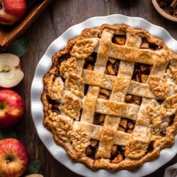
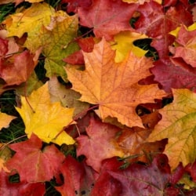
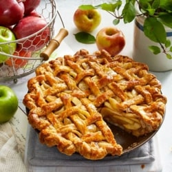
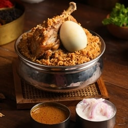
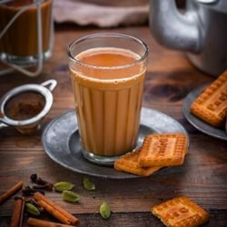
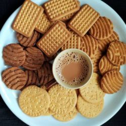

Autumn
“There is something so special in the early leaves drifting from the trees – as if we are all to be allowed a chance to peel, to refresh, to start again.”
– Ruth Ahmed
Autumn is the season of vibrant colors and cozy vibes as leaves turn shades of red, orange, and gold.
Here we have some ideas on seasonal activities to do and delicious food to enjoy spring to the fullest
Activities to DO
• Go for a walk •
Autumn is the perfect time to go for a walk and soak in the beauty of nature. The crisp air and the crunch of colorful leaves underfoot create a calming experience. Strolling through parks or tree-lined paths lets you admire the vibrant fall foliage while enjoying the refreshing breeze. It’s a simple yet rewarding way to embrace the season’s charm.
• Read Books •
Autumn’s cozy ambiance makes it an ideal season to curl up with a good book. Whether it’s a classic novel or a thrilling mystery, the cooler weather and soft, golden light set the perfect mood for reading. Pair your book with a warm blanket and a cup of tea or coffee for a truly relaxing experience. It’s a wonderful way to unwind and embrace the season’s calm.
• Bake Pies, Buns, Breads and Rolls •
Autumn is the season for baking delicious treats that fill your home with warmth and mouthwatering aromas. From spiced pumpkin pies to buttery dinner rolls, it’s the perfect time to experiment with comforting recipes. Baking not only satisfies your sweet tooth but also brings loved ones together to share the joy of homemade goodies. Enjoy the cozy vibes as you watch your creations rise in the oven!


• Collect and study leaves •
Autumn offers a great opportunity to collect and study leaves as they transform into vibrant shades of red, yellow, and orange. Exploring different shapes, sizes, and colors can be both fun and educational. You can press your favorite finds into a scrapbook or use them for creative projects. It’s a wonderful way to connect with nature and appreciate the season’s beauty.

• Clean and Organise your home for the upcoming festive season •
Autumn is the perfect time to refresh your home and get it ready for the festive season. Declutter spaces, deep clean, and add cozy touches like warm blankets and seasonal decor. Organizing now helps create a welcoming atmosphere for guests and ensures you’re prepared for holiday celebrations. Embrace the season with a tidy and inviting home!
• Watch a Comedy •
Autumn evenings are perfect for unwinding with a lighthearted comedy. Whether it’s a classic sitcom or a funny movie, laughter warms the soul and lifts the seasonal chill. Gather with friends or family, grab some popcorn, and enjoy the cozy vibes of a fun night in. It’s a great way to de-stress and share joy as the days get shorter.
Food
• Bakery stuff like apple pie, cinnamon rolls and pizzas •
Autumn is the ideal time to indulge in baking delicious seasonal treats like apple pies, cinnamon rolls, and even homemade pizzas. The rich aroma of cinnamon and baked apples fills your home with cozy vibes, perfect for the season. Whether it’s a sweet dessert or a savory pizza topped with fall veggies, these baked goods are a comforting way to celebrate the season’s flavors.

• Veg/NonVeg Biriyani •
Autumn is a great time to enjoy a hearty plate of biryani, whether you prefer the fragrant veggie version or the rich non-veg kind. The combination of aromatic spices, tender rice, and savory meats or veggies makes for a comforting meal as the weather cools. Perfect for family gatherings or cozy nights, biryani offers a flavorful experience that’s hard to beat during the fall season.


• Tea and Biscuits •
Autumn’s crisp air calls for a warm cup of chai paired with crunchy biscuits. The soothing spices of chai, like ginger and cardamom, complement the cozy vibes of the season. Dunking buttery biscuits into your tea makes for a simple yet delightful treat. It’s the perfect way to relax and embrace the comforting essence of fall.
 
• Hot Chocolate or Coffee with Croissants •
Autumn mornings and evenings are perfect for enjoying a warm cup of hot chocolate or coffee paired with buttery croissants. The rich flavors of the drink complement the flaky, golden pastry for a cozy and indulgent treat. Whether you’re starting your day or winding down, this classic combination adds a touch of comfort to the season.